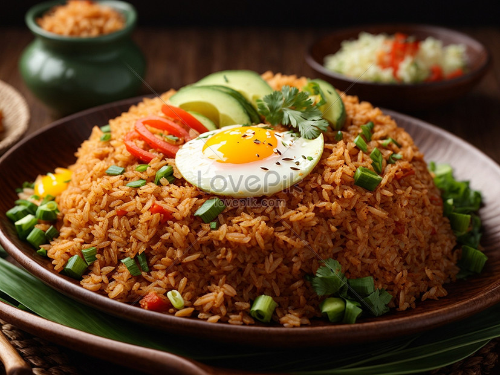
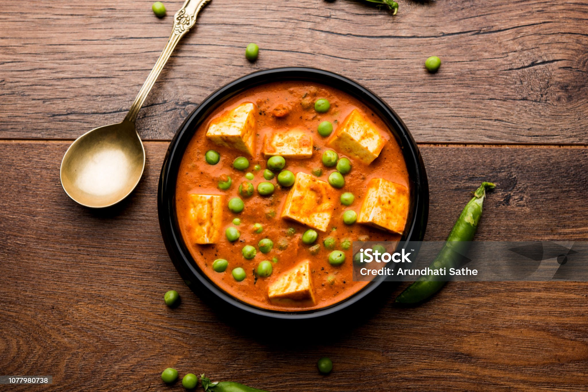
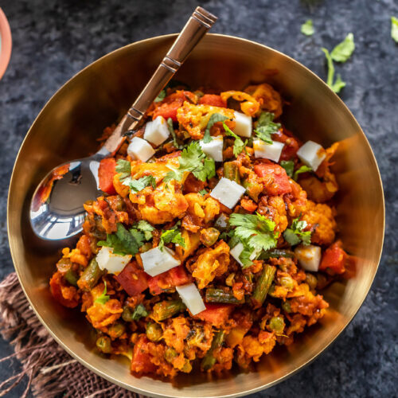

Find Your Favorite Recipes

Chicken Chilli
A spicy and flavorful chicken dish perfect for dinner.
Fish Fry
Deliciously crispy fried fish, perfect as a starter.

Fried Rice
A classic Asian rice dish with vegetables and flavors.

Paneer
Soft, creamy paneer dish, a favorite for all occasions.
Dal
Delicious dal curry, a staple in Indian cuisine.

Mix Veg
A colorful mix of vegetables cooked to perfection.